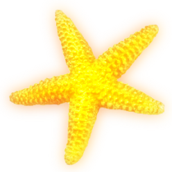
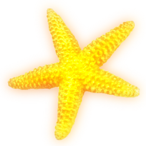

꿈이란 무엇인가
우리에게
어떤
영향을 끼치는가
다양한 꿈의 세계로
당신을 초대한다.
unconsciousness and future
prediction of the future
......Distant or close
And I support your future
~*
.gif)
.gif)
.gif) 

★ 불가사리 꿈
끈질긴 인연이 시작 된다.
시작 단계이기 때문에 좋은 쪽과 나쁜쪽, 어떤 것이 될지 알기 어렵다.
★ 우주인 꿈
새로운 아이디어나 , 풍부한 발상이 일에 쓰여질 것이라는 암시이다
.gif)
★ 파란 돼지를 안고있는 꿈
태몽으로, 자식을 낳아 유명한 석학자로 출세를 시킨다.

★ 독수리가 물고기를
낚아채는 꿈
좋은 찬스를 이용하여 목적을 달성한다. 재물, 돈, 물품, 낙찰, 상술전략 등의 길조이다.
★ 물새가 돌고래를 낚는 꿈
전국에 수배된 흉악범을 잡아 특진과 상, 훈장을 받고 특별휴가를 얻게 된다. 횡재, 재물 등의 길운이다.
★ 돌고래를 잡는 꿈
재물과 돈이 생기고 집안에 풍년이 들게 된다. 횡재, 식복, 선물 등이 생긴다.
★ 구름 속 예수님 꿈
학자, 기관장, 기타 위대한 사람, 책 등이 자신에게 영향을 준다.

★ 무지개 꿈
길하고 경사스럽고 명예로운 일, 인기, 신용, 약속, 결혼, 경사, 결연, 과시 등의 일을 상징한다.
★ 양 꿈
선량한 사람, 신자, 교육자, 진리, 정신적 또는 물질적인 재물의 상징이다.
★ 열기구를 타고 하늘로
날라가는 꿈
권리나 이익을 남보다 많이 차지할 좋은 기회 및 여건이 형성될 수 있지만, 도중에 허망한 실패의 위험성에 부딪칠 가능성이 높다.
★ 돼지를 타고 바다를
건너는 꿈
지금 마음먹은 대로 소원성취하고 큰 대업을 이루게 된다. 무역, 재물, 횡재 등이 있다.
.gif)
★ 논에 있는 백조 꿈
재물이 모이게 되어 의식주가 풍부해지고 자신에게 도움을 줄 수 있는 여러 사람들과 접촉하게 된다.
.gif)
★ 바다에서 인어를 붙잡아 온 꿈
태몽으로, 태어날 아이는 장차 인기인이 되거나 인기작가, 또는 이색적인 종교인 등이 된다.
.gif)
★ 인형에 관한 꿈
남을 냉정하게 대하고 있는 사람이 꾸기 쉬운 꿈으로, 인형은 닫혀진 마음을 상징한다.
★ 꽃게의 등에서
찬란한 빛을 발하는 꿈
어떤 단체나 조직의 우두머리가 되어 휘하에 부하를 거느리게 될 징조이다. 당선과 승진 등을 암시하는 길몽.
★ 집터를 닦는 꿈
사업 판도나 세력권을 형성하는 일에 관계하게 되며, 그 자리에 집을 지으면 정신적, 물질적 사업을 시작하게 된다.
★ 캥거루가 집안으로 들어오는 꿈
부인과 새댁은 임신을 하여 예쁜 딸을 낳는 태몽이다. 재물, 먹거리 등의 길운이다.
★ 산 위에 밝은 보름달이 떠 있는 꿈
입학, 승진, 합격, 당선, 취득, 승리 등의 기쁜 경사가 있다. 뜻대로 소원성취한다.
★ 치타가 먹이를 찾아 헤매는 꿈
모든 것이 잘 풀리지 않고 어려움을 겪게 된다. 잃어버린 밥그릇이 생각난다.